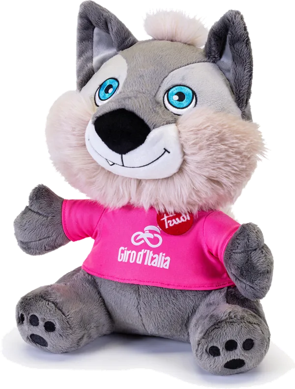

El origen
Sale el primer Giro desde Milán
Organizado por La Gazzetta dello Sport. Luigi Ganna se lleva la primera edición.
Edición especial · Historia
El Giro d'Italia es una de las tres grandes vueltas del ciclismo mundial. Su color, su trofeo y su épica salieron de las páginas de La Gazzetta dello Sport.
La idea surgió en la redacción de La Gazzetta dello Sport, el diario deportivo de Milán. El 13 de mayo de 1909 salió la primera edición del Giro d'Italia, y Luigi Ganna se convirtió en su primer campeón tras recorrer las carreteras de un país que todavía se estaba uniendo.
En 1931 la carrera adoptó la maglia rosa para el líder de la general, del mismo color que el papel en que se imprime La Gazzetta. Learco Guerra fue el primero en vestirla. Desde entonces, el rosa es el color del Giro, y "vestir la rosa" es el sueño de cualquier ciclista.
Alfredo Binda, Fausto Coppi y Eddy Merckx comparten el récord de cinco victorias. Puertos como el Mortirolo, el Gavia, el Stelvio o el Zoncolan forjaron su fama de carrera dura, bella y siempre impredecible.
Hoy el Giro sigue organizado por RCS Sports & Events, la empresa de La Gazzetta, y ha llevado su experiencia a aficionados de todo el mundo con Ride Like a Pro: la oportunidad de rodar como profesional, aunque sea por un día.
Organizado por La Gazzetta dello Sport. Luigi Ganna se lleva la primera edición.
El color del papel de La Gazzetta se vuelve el símbolo de la carrera. Learco Guerra estrena la camiseta.
Julio Alberto Pérez Cuapio logra su primera victoria de etapa; al año siguiente suma dos más.
El Giro presenta a su nueva mascota: un lobo con playera rosa que hoy acompaña a la carrera y a Ride Like a Pro.
El de Ensenada se convierte en el primer mexicano en liderar el Giro, gana una etapa y termina segundo de la general.
El 28 de febrero, el gran fondo del Giro d'Italia llega a la Ciudad de México con salida en 20 de Noviembre y el Zócalo.
México y el Giro
México ha tenido un papel discreto pero significativo en el Giro. En los últimos años, se volvió protagonista.
El regiomontano fue uno de los primeros mexicanos en destacar en el ciclismo profesional europeo y corrió el Giro en 1990 y 1992.
Pionero en EuropaEscalador puro. Corrió nueve Giros y ganó tres etapas de montaña: una en 2001 y dos en 2002.
3 victorias de etapaPrimer mexicano en vestir la maglia rosa como líder de la general. Ganó la etapa 17, terminó segundo y se llevó la maglia bianca al mejor joven.
Maglia rosa · 2.º lugarFuente: giroditalia.it, «The Giro d'Italia and Mexico: a story renewed» (2025).

Ride Like a Pro es la iniciativa de RCS Sports & Events y La Gazzetta dello Sport para que los aficionados vivan el Giro como profesionales: salida masiva, ruta con apoyo y una meta que se celebra en rosa.
Sedes según giroditalia-ridelikeapro-colombia.com/historia. Lee las últimas noticias en La Gaceta.